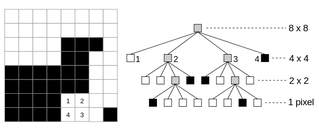
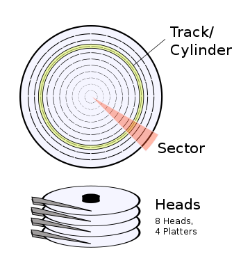

Ive always been fascinated with the demoscene: impressive programs, such as 8088 MPH or State of the Art making the most out of limited hardware in order to put on a show and mesmerize people. Demos are the best of two worlds that I love, low-level computer programming and audiovisual art.
Im also a huge fan of Touhou, a japanese bullet-hell game series with great music that has gathered a huge community and derivative works by fans, such as doujin manga, animations, fan games and music. One of the most famous examples of a very popular Touhou-related work of art is the Bad Apple!! music video, a shadow-art clip accompanied by a vocal cover of the eponymous game track.
This animation has been used as a demo for many different platforms ranging from the NES to the Commodore 64. Most of those demos use very large cartridge formats or large internal hard drives to store the animation and waste as little time as possible decoding data.
My motivation for creating this demo was to explore the ways Bad Apple could be compressed on a symbolic 1.44Mb floppy disk and be played on a limited machine, juggling between compression efficiency and decompression speed.
I was interested in programming for a 16-bit machine, because I expected 8-bit machines to be more of a hurdle and was feeling less confident with smaller word sizes. My choice landed on the original IBM PC 5150 from 1981, as its the grandfather of all PC-compatibles and one of the first users of the x86 architecture that I am familiar with. On top of that, there are many mature PC emulators available, which makes programming and debugging easier.
At the center of the IBM PC 5150 lives a fairly interesting CPU, with a lot of potential and power but limited in many ways. Lets study it in more detail.
At the time of the IBM PC 5150 release in 1981, the personal computer ecosystem was still fairly small and populated by 8-bit machines such as the Apple II, the Commodore PET or the Commodore VIC-20, limited in their processing power, clocking at around 1 MHz and with a couple dozen kilobytes of RAM at most.
For its time, the 5150 was quite the powerhouse, with a CPU clocked at 4.77Mhz capable of processing 16-bits numbers and up to 256KB of RAM.
However, there was a caveat: the 8088 wasnt truly 16-bit.
Despite having a 16-bit ALU which means instructions can natively operate on 16-bit data, the 8088 had a 8-bit wide data bus : this means that in order to read or write a 16-bit value, two memory accesses must be made, as opposed to a true 16-bit CPU like the 8086.
The data buses of the 8088. From Michael Abrashs Graphics Programming Black Book.
The 8086 like the 8088 possesses a buffer called the prefetch queue. The prefetch queue allows instructions to be fetched from memory when the instruction being executed doesnt use the memory bus, in order to allow the Execution Unit to be fed continuously. Having to use a 8-bit data bus incurs a heavy penalty: whereas a 16-bit bus allows the prefetch buffer to be filled most of the time, a 8-bit bus means only half as many instructions can be prefetched. This implies that when using many fast instructions such as shifts, the prefetch buffer can be a bottleneck and stall the execution of the program, costing more cycles than expected.
Therefore, in order to avoid losing cycles, its important to resort to byte-sized variables as much as possible in tight loops, and to schedule instructions so that the prefetch queue isnt stalled.
The PC 5150 supports up to 256 kilobytes of memory, and the 8088 has a 20-bit address line. However, having 16-bit registers would mean that pointers can only address up to 64kB. How can we address the rest of the RAM?
The solution used by the 8086 and therefore the 8088 is to use segmented addressing.
The address space is divided into windows of 64 kB referred to as segments.
Additional registers, named segment registers, provide additional address bits to create a logical 20-bit address out of a 16-bit pointer within a segment.
Logical addresses are computed in the following manner:
logical address = (segment register << 4) + pointer
where << denotes the left bit shift operation.
The following segment registers are available:
Each instruction can use a different segment register through the use of a segment override prefix: this allows us to access different 64kB segments without having to reload ds for example.
Many modern processors such as the Pentium and later used many tricks such as superscalar execution (multiple instructions executed simultaneously), branch prediction, caches to speed up execution. The 8088 has nothing of this, and save for the prefetch queue, is as simple as a processor can be regarding its execution flow.
This may appear as a curse at first, because it means a lot of care will have to be spent optimizing the code to get the most out of every cycle, but this is also a blessing as the behavior of the CPU is much easier to understand and theres no need to worry about caches, data locality and the like. As long as you make sure you take in account the prefetch queue and the 8-bit data bus penalties, cycle counting is easy and optimizing becomes a simpler task.
My reference for instruction timings was this very well-made page: https://www2.math.uni-wuppertal.de/~fpf/Uebungen/GdR-SS02/opcode_i.html.
A good rule of thumb is that the longer an instruction is in bytes (such as when using memory operands), the more cycles it takes to execute. Short instructions that operate on implicit operands or on registers are often very fast: the shift instructions which operate on a single register and a few others such as cbw which dont need to pass through the ALU take as little as 2 cycles, regular arithemtic operations on registers take 3 cycles. However, instructions making memory accesses are both limited by the 8-bit bus and by the address generation hardware: complex addresses such as the ones generated using two registers and a displacement can add up to a 12 cycles penalty on top of the memory access cost!
It is therefore important to make use of implicit operand instructions such as lodsb/w (load single byte/word), stosb/w (store single byte/word), or even stack instructions, which always use the si, di or sp registers, for maximum performance.
The demo uses the full 256 kB of RAM that the IBM PC 5150 can use. The demo could probably use as little as 64kB through a more clever usage of music data streaming, but I unfortunately ran out of time and could not explore this possibility properly.
The memory map used by the program is as follows:
| Address range | Usage |
|---|---|
| 0x00000-0x0FFFF | BIOS data area, stack |
| 0x10000-0x1FFFF | Lower 64kB of music |
| 0x20000-0x2FFFF | Code, animation buffers |
| 0x30000-0x3FFFF | Upper 64kB of music |
The music data range is not contiguous, however that is not a concern as segment registers allows for easily switching between 64kB ranges.
(Note : I highly recommend reading the related chapters in Michael Abrashs Graphics Programming Black Book of which you can find copies online. This was my main reference, along with the Programmers Guide to the EGA, VGA and Super VGA Cards).
The original IBM PC 5150 shipped with either a MDA card which could display 80x25 monochrome text or a CGA card capable of limited graphics modes, up to 640x200 pixels in monochrome. However, the palette is fixed, and the addressing scheme is complicated due to the limitations of the video hardware (odd and even lines arent contiguous). Because this was my first experience with programming for old PC hardware and I wanted to have fun with more complex hardware, I decided to go for the famous VGA card, which was released much later. Its a plausible choice, as a BIOS firmware update released in 1982 allowed support for video cards with extension ROMs, thus supporting later hardware.
Unlike modern video cards, the VGA compatible cards dont expose a linear framebuffer where every pixel is mapped to a certain address. The VGA BIOS exposed multiple video modes supporting different resolutions and color counts. Due to how the video RAM is implemented in hardware, in all modes except mode 0x13 the screen data is accessed using planes, with each video RAM bank on the card corresponding to a plane. The VGA card can be configured in order to select which planes to write to.
How each pixel is stored in video RAM in planar modes.
Each pixel is represented as 4 bits which map into a palette of 16 colors in order to determine which color to be drawn on screen. Bit 0 of the first pixel maps to the first bit of plane 0, bit 1 maps to the first bit of plane 1, and so on.
The Map Mask Register selects which planes to be written to : this allows for one cpu write to change up to 4 planes at once. (this is what made the infamous Mode X used in Wolfenstein 3D and Doom so efficient: by modifying the linear mode 0x13 to use the planar hardware, four pixels could be modified in a single write!)
I settled on using mode $0xD (320x200, 4 colors) as a basis, which I would slightly modify using the VGA registers according to my needs. Because I wanted to preserve the original aspect ratio of the video and have a width that is a multiple of 16 pixels, that implied using a 256x192 display area.
Up to 256 colors are supported, but the 4 planes only allow 16 individual colors on screen. How did the video controller map those 4-bit pixels to that color range?
768 bytes of palette RAM are used for storing 6-bit RGB values for each of the 256 colors. These colors can be set using the DAC registers.
Before being used to select a palette RAM color, the 4 bits of plane data are fed into an internal palette of 16 bytes. This internal palette maps plane values into 6 bits that are fed into the palette RAM. If this feels unnecessary, then you are correct! This step is a relic from the EGA which didnt have the extended support for palette change the VGA has, and was kept because of backwards compatibility reasons. In order to make things cleared, I will refer to the 16-bytes palette as internal palette and the 768 bytes palette as the palette RAM.
The Attribute Mode Control and Color Select registers control how these bits are fed to the palette RAM. The P54S bit is used to select the bits 5-6 fed to the palette RAM from the internal palette or from the lowest 2 bits of the Color Select register. Bits 7-8 are taken from the highest 2 bits of the Color Select register.
The VGA Behaviour in 16 banks mode.
The VGA Behaviour in 4 banks mode.
In essence, this allows us to quickly switch between banks of 16 or 64 colors palettes, by changing the Color Select register.
The VGA video controller refreshes the screen at a 70Hz frequency. The 8088 is not nearly powerful enough to update the video data at that speed: therefore, the screen might display multiple frames that are currently being modified: this is a problem known as tearing, that is often solved in modern computers by using two buffers, and displaying the one that has been updated.
One cool property of the Color Select register is that it allows us to perform double-buffering without having to use a second buffer of video memory. Because I chose to display a purely black&white version of Bad Apple, I only use 1 plane out of the 4 planes available.
By alternating between plane 0 and plane 1, it is possible to modify animation data in one plane while retaining the display frame intact in the other plane, avoiding tearing effects.
In addition to that, the Color Plane Select register allows selecting which planes to write to, including multiple at once. It is therefore possible to maintain a frame on multiple planes, one for the display and another for modification. Using Write Mode 0 which allows data from video memory to be latched and combined with input data using a logical operation, and configuring the appropriate registers, it would have been possible to implement delta-encoding by only modifying the changed bytes of each frame, using a XOR operation on the saved previous frame. The good results of regular encoding meant that this option wasnt necessary, but I kept the palette double-buffering as it was already working well.
The palette Ive settled upon is the following:
| Plane 0 | Plane 1 | Plane 2 | Plane 3 |
|---|---|---|---|
| Page 0 | Page 1 | Shade | Negate |
Planes 0 et 1 (which correspond to bits 0 and 1 of the corresponding palette index) contain the binary data of the animation (black or white). The palette entries are set up so that on the first palette, the plane 1 doesnt change the color, and on the second palette, plane 0 doesnt change the color.
Changing the active palette therefore changes which plane is the one displayed on-screen.
Plane 2 is used to shade the color displayed, by mapping black pixels to dark grey and white pixels to light grey when set. Plane 3 inverts the color display if set.
These planes are used to display the kanji on each side of the screen using shaded tones for a better visual result, for the progress of the lyrics bar at the bottom, and for the sound bars using the negate plane.
On the left: the palette used when Plane 0 is the active plane.
On the right: the palette used when Plane 1 is the active plane.
As established earlier, a 256x192 resolution at 15 fps has been chosen for the animation, following a guesstimate of what could reliably be rendered in time by the 8088 and what could fit in 1.44MB. That leaves us with 3286 frames, which amount to about 20 MB of uncompressed data. How can we possibly make that 20x smaller?
Luckily, we know some useful properties about the data were processing, but were also going to have to deal with the limitations of 8088.
Before even thinking about compression techniques, we need to extract the date were going to be working on. For that purpose, I used the excellent tool ffmpeg and its frame extraction feature using the following command on the music video:
$ ffmpeg -i video.mp4 -vf fps=15,scale=256:192 320x200_nodither/frame-%d.png
We get 3286 frames at a 256x192 resolution. Those files are included as part of the github repository.
The first strategy that springs to mind is to use some form of run-length encoding (or RLE, in short). Its a very simple format that is very easy and efficient to decode, simply encoding the number of times a certain symbol is repeated. One could implement RLE considering single bits (a pixel), bytes (8 consecutive pixels) or words (16 pixels) as the symbols to repeat. Using single bits has the advantage of not requiring specifying which symbol to repeat, as the new pixel to be repeated will always be the inverse of the previous one. It is however more costly to decode, as the 8088 works on operands no smaller than bytes and its bit manipulation instructions are costly.
I chose a symbol length of a word (16 pixels) as it gave a marginally better compression ratio than a byte width, while making the code slightly more efficient. Even though the 8088 data bus is 8 bits wide, its still cheaper to issue a single stosw than two stosb and at least a bookkeeping instruction along them.
The way the image is traversed for the encoding of RLE data is important. Due to the nature of the animation (most frames fill vertical space with thin characters), it is more efficient to use a column-major order: this way, fewer transitions are encountered, as many vertical line are plain black or white, or are very similar.
A quick benchmark using my compression code shows that column-major encoding is about 1.5x more efficient.
These are not the only way to traverse a 2D matrix. Some other space filling curves, like the z-order curve or the Hilbert curve tend to preserve locality better, and lessen the amount of color transitions.
This saves a small amount of space thus and leads to more efficient compression. It complicates the decompression code slightly, requiring a table lookup to convert the traversal index to the corresponding coordinates. The overhead is small, but the gain in compression efficiency was too small to justify the added complexity, and I preferred using the execution time budget to accomplish other tasks.
By virtue of being black&white images, the frames could lend themselves to some form of quadtree encoding. Using such a data structure, the largest areas of plain black or white as well as the smaller details can be compressed efficiently. Quadtrees require a square area to work with, but the 256x192 screen can easily be divided in a 192x192 square and three 64x64 squares. However, I found that the RLE encoding efficiency was turning out to be promising enough, and I was uncertain about how better would a quadtree approach be. I was also afraid about the complexity and inefficiency of the decoding process, therefore I chose to focus on the RLE approach.
Encoding a monochrome image as a quadtree.
The Bad Apple animation is a famous case of shadow art: black silhouettes being projected onto a white background. The silhouettes might be large, but most of the time theres only one displayed on a frame, as a unified blob of black or white pixels. This sounds like a very interesting property, and while doing research on the subject I stumbled upon this very interesting paper about contour coding.
Essentially, each blob of data of each frame can be defined by its contour, that is by the sequence of pixels that define its outline. This sequence can be further described as a succession of pixels that is offset from the previous one by a certain direction.
As this direction can be described in as little as 2 bits (as with the Crack coding scheme shown below), this could lead to a very efficient encoding of frame data, possibly combined with some sort of Huffman encoding. I expect this approach to be too expensive to decode for a 8088, but this could lead to very satisfying results for higher resolutions where RLE might fail, and more efficient CPUs.
Contour coding schemes, describing how to encode the offset between a pixel of the contour and its successor.
By now, you might be shouting at your screen, wondering why the hell didnt I implement some form of delta encoding, updating only the parts of the screen that change between each frames, utilizing the temporal locality of the animation.
Well, I meant to do that at first, developing a double-buffering system based on palette switching that I will explain later that would allow using the VGA card facilities to implement this with some amount of ease.
However, I realized while experimenting with encoding schemes that while combining delta-encoded frames and regular frames leads to best efficiency, delta-encoding alone is vastly inferior to no delta-encoding at all. As the 8088 turned out to be able to pump out full 256x192 frames at 15fps as I desired, I decided that the extra complexity wasnt worth the trouble.
It might likely end up being an essential approach for larger resolutions and/or faster framerates, though!
A naive implementation of RLE is not efficient enough for our own purposes. However, there are properties of the animation that we can exploit in order to yield better results, utilizing different coding strategies. These strategies are divided into ten RLE commands, as follows:
Repeat: This command corresponds to regular RLE: a single word is repeated n times, in column-major order.
RepeatLine: a single line filled with the same 16px block is repeated n times.
ShiftedSequence: Many 16px blocks can be divided into two parts of different color. This command encodes a sequence of such shifted blocks, encoding the position of the split between the colors instead of the entire 16px block for better space efficiency.
RepeatShifted: This command is similar to the one above, but repeats a single block n times instead of a sequence of shifted blocks.
RepeatXor: Many 16px blocks only differ from the previous one by a single pixel. This commands repeats a block that can be obtained from the previous one XORd with a specific lookup table.
RawBlock16: This command encodes a sequence of 16px blocks that cannot be more efficiently encoded by other methods.
EndOfFrame: Signals the end of the current frame. It might also be followed by data related to the sound bar effect and the lyrics progression.
EndOfLine: Signals the end of a line, and that the decoder code should jump to the next column.
EndOfData: Signals the end of the animation data.
While hunting for the best compression methods, I somewhat neglected to take the complexity of the encoding in account. I used Huffman encoding to a ridiculous extent for the RLE commands based on the frequency at which they appeared, which led to very efficient encoding (about 900kB and 90% entropy according to binwalk, close to the efficiency of the .zip DEFLATE algorithm). Its however a major pain to decode, as the 8088 is very inefficient at bit-level operations. The variable shift instruction can take up to 36 cycles to execute in the worst case on a register: thats more than 7.5s spent on each RLE command of each frame.
Taking inspiration from bytecode interpreters using threaded code (which has nothing to do with multithreading!), I decided to code each RLE command as a single byte followed by one or more data bytes, encoding as many common-case scenarios in a single byte.
The decompression algorithm in a simplified form is as follows:
load a single byte from the compressed data stream
convert the byte into an offset into a jump table
load the jump target from the table
jump to the section of the code corresponding to the RLE command loaded
(...command completes)
(the process is repeated at the end of the command code)
As many commands and their data can be encoded into a single byte, this allows some commands to be compiled in advance using assembler directives: as we know in advance the data contained in the command byte, we can output code that is directly unrolled or optimized for the specific command.
All in all, this set of commands and appropriate size optimisations led to a total of 1262KB being used for the animation data, leaving 178KB to be used for music and code.
The raison dtre of this demo was to be able to store Bad Apple on floppies and run them on the fly, without having to use a dedicated hard drive; a challenge in compression first and foremost.
The IBM PC 5150 floppy controllers supports up to four 5.25" 360k floppies; but it also partially supports later 3.5" 720k floppies, even though the BIOS floppy routines are somewhat bugged in that regard. In order to simplify the code somewhat, I chose to go with the two 720k floppy option.
One thing to note about floppies is that theyre extremely slow: using the BIOS routines, reading a 512-bytes sector takes around 100ms, which is absolutely not acceptable when we need to be streaming data from the floppy out to the screen at 15fps!
Floppies contain one or more heads reading a disk side. Disks are separated in different circular parts called cylinders. A cylinder is made out of two tracks, corresponding to the top and bottom sides of the disk. Each cylinder is further divided into multiple sectors of 512 bytes.
The disks are spinning continuously at a predetermined rotation speed (300 RPM for a 3.5" floppy) : in order to read a sector, the floppy controller has to wait for the right sector to come in front of the head. Then, as the disk spins, the head reads the data bytes.
This means that reading a sector and reading an entire cylinder takes a similar amount of time: the controller must wait for the disk to bring the sector in front of the head, once this is done, its just a matter of reading consecutive data as the disk rotates.

A big disadvantage of using BIOS functions is that theyre blocking: apart from interrupt handlers, no other code can be run while data is being read. This is rather unfortunate, as the BIOS accesses the floppy using DMA, which means that the floppy controllers takes care of reading the data into memory by itself, lightening the charge on the CPU. There is a slowdown as the memory bus is used by both the CPU fetching instructions and the DMA controller, but its nonetheless much better than blocking I/O.
This means that well have to write a floppy driver by ourselves: a daunting task, especially since floppies are famously unreliable, and figuring out the correct controller configuration is sometimes akin to black magic. Thankfully, there were many resources along the way to help.
Writing our own separate driver also allows us finer control over the hardware. In order to read from a floppy, the disk motor needs to spin up to speed; the BIOS manages when to power the motor on or off based on a timer we dont have control over. As were going to continuously read data from the floppies, we can keep the motors on for the entire duration of the animation.
This way, the floppy controller can read up to a cylinder at once; that is 29512 = 9216 bytes on a 720k floppy with 9 sectors per track and 2 heads.
Each frame of the animation data is packed in multiple cylinders of 9216 bytes. If a frame crosses a boundary, it is pushed back to the next cylinder.
At any point during the playback of the animation, a cylinder is being read into memory by the floppy controller. As soon as the last frame of the current cylinder is played, the following occurs:
For that purpose, two 9216 byte blocks are reserved in the main data segment, in order to store the cylinder containing the frames being played and the cylinder being loaded by the floppy controller. In a manner similar to double-buffering, the pointer referring to the start of the data to play is changed each time a cylinder is loaded.
Demos are all about making the most out of impressive hardware in an impressive manner: its a scene. This is especially true of Bad Apple, a music video that wouldnt be whole without the famous Alstroemeria Records track.
However, we are limited by the size constraints of using floppies, and about 128KB are left for music. A quick calculation shows that using audio sample data is out of the question, as it would require megabytes of storage. More clever compression schemes like ADPCM which cards such as the Sound Blaster 16 could natively play wouldnt be enough. A different approach is required.
Instead of playing back sampled sound, it is much more size efficient to generate the soundwaves on the fly, using PC sound hardware cards such as the Sound Blaster Pro 2. This card contained a Yamaha OPL3 chip, which uses FM synthesis to create sound, giving it a unique sonority.
FM synthesis works by modulating the frequency and the envelope of waveforms such as sine waves or sawtooth waves. The sound chip can be programmed to output different kinds of sounds using registers which control different channels that can be tuned and combined. Just like sheet music is a way to conceptualize and reproduce songs by specifying which notes to play at which rhythm, FM synthesis songs are stored as a sequence of registers to be modified instead of pure audio sample data, which is much more space efficient.
Luckily for us, DOSBox can record the register commands sent while playing a song as a DRO file, a simple list of register-value pairs.
By playing this excellent cover of Bad Apple for the OPL3 made by NAB622 using Adlib Tracker, I was able to save the commands sent to the sound chip as a 500KB file.
Unfortunately, 500KB is still a far cry away from the 128KB required. Naively compressing the DRO file using a lossless scheme doesnt cut it: the command information is already stored quite efficiently. Were going to need some form of lossy compression.
Most commands sent to the OPL3 chip are changing the frequency or output level played by a specific channel. For effects such as portamentos, those changes are continuous and thus most registers only changes by a few units. A first approach is therefore to elide all register update commands such as the difference in value is below a predetermined threshold.
The commands sent to the OPL3 chips are gathered in what I call basic blocks, separated by delay markers. The registers in basic blocks are supposed to be set instantaneously, and if there are two or more writes to the same register in a block, the last write is the one effective. The DRO file output by DOSBox contains many instances of multiple writes to the same register: by simplifying basic blocks, I found that I was able to reduce the size of the file by half.
Another optimization is to reduce the frequency at which commands are sent to the sound chip. The source DRO file contains many 1ms or 4ms delays between basic blocks. By merging such blocks until delays reach a certain threshold, and subsequently removing the necessary register writes, we can obtain a great increase in compression efficiency.
Obtaining a final file size below 128KB was then just a matter of tuning the two thresholds until a pleasing result was obtained.
As the floppy controller will be busy reading animation data, its not possible to stream music data progressively. It would have been possible to embed OPL3 commands along each animation frame, but given that 128KB of RAM are available, I chose to preload the music in memory before the demo starts.
The music data is stored at the end of the second floppy: it is read after boot into addresses 0x10000-0x1FFFF and 0x30000-0x3FFFF: these address ranges are not contiguous, but that is not a problem as they correspond to different segments; we simply have to change the segment register value when switching from the first half to the second half of the data.
A routine is set up to run each 1ms by programming Channel 0 of the timer chip to fire an interrupt at a 1000Hz frequency. This routine first checks if a delay is active and non-null: if it is, the delay value is decremented. If theres no need for a delay, the appropriate registers are loaded with the segment to use and the OPL3 I/O address. The next basic block is read, and for each command pair, the appropriate I/O instructions are used to change the OPL3 registers.
A command can be marked as extracode: in that case, it does not refer to a OPL3 register but to a delay, a segment switch marker or to the end-of-song marker.
If the segment switch marker is encountered, the instruction in the prologue of the routine is modified in order to load the segment corresponding to the second half of the song. This kind of self-modifying code is possible and optimal because the 8088 has no instruction cache and no need to maintain consistency between memory and whats executed by the CPU: self-modifying code is almost never the answer, but in old hardware, its a very convenient trick when a part of the code flow needs to be changed in certain scenarios, instead of resorting to a jump or a memory access that would occur a cycle penalty for each call.
A similar trick is used for the end-of-song marker, replacing the prologue of the routine with a jump to the exit when theres no more music to be played.
An animation resolution of 256x192 leaves us with 64 pixels of extra horizontal space and 8 bytes of vertical space. As there was some time budget left after decoding and playing a frame and sending the music data to the OPL3 chip, I decided to put those extra pixels to good use and display both lyrics and dynamic sound bars.
After loading the code data from the first floppy drive, plane 0 and 1 are both filed with the kanji , as a nod to the Touhou game the original Bad Apple!! track is from. Plane 2, the shading plane, is used to provide some kind of smoothing using half-tone colors in order to make the kanji look less sharp.
Plane 3, the negate plane, is filled after each frame up to a height specified in the frame data, corresponding to the current sound level; emulating an equalizer display.
Using a separate plane as a negate bit for each pixel allows the code to easily implement such functionality without having to redraw the kanji with the correct color 15 times per second. Each frame contains a byte corresponding to the difference in height between the sound bars of the previous frame and the current one, allowing the code to easily update only the rows of pixels that need to be changed.
8 pixels of vertical space isnt much, but its just enough to show text using a 8x8 font.
Bad Apple is a pretty popular karaoke song, so using that space for lyrics seemed like an obvious choice!
Here again, having a separate plane for shading has proven to be useful: white and grey pixels can be used to display the progression of the song through the lyrics.
For that purpose, each frame contains an additional byte that represent the progression, using 3 bits to represent the position within a character, and the other 5 bits to represent which character is currently being sung.
Two routines for drawing text (one for drawing multiple characters and one for drawing only the first n columns of a character) are used to display the lyrics. First, when a frame signals a change in the lyrics to display, the full lyrics line is drawn in both planes 0, 1 and 2 in order to display text in grey. Then, as the lyrics progress through each frame, the characters that are being and have been sung are cleared from plane 2, in order to display them as white.
This is a pretty cheap solution that doesnt cost many cycles, and storing the lyrics progression in the frame data would allow for a non-linear progression, for example including pauses and syllables being sung faster than others. I didnt implement this kind of thing due to lack of time, but it would be pretty easy to do so.
How the lyrics appear on-screen during the animation.
Unfortunately, IBM PC 5150s are hard to come by these days, as so are floppies and Sound Blaster cards. In order not to ruin both my wallet and my sanity, I decided to test my code using some PC emulators.
The most important thing about demomaking, and what makes it fun, is having to program under constraints of time and/or space. Many emulators are not cycle-accurate, nor simulate floppy delays properly; or dont support some of the more obscure VGA registers. Its therefore important to make sure not to make a demo that only works well on emulators that cheat!
For testing whether or not my code works within the tight cycle constraints of the original machine and its quirks, I used 86box, a PC emulator that has a cycle-accurate emulation of the 8088 and its ecosystem. As a testament to its quality, its as far as I know the only emulator capable of running the famous 8088 MPH demo!
For quicker prototyping and debugging purposes however, I used both QEMU and bochs. QEMUs emulation is extremely fast and has a debug console that can display the contents of registers, but it lacks support for emulating the Sound Blaster Pro 2.0 card. Bochs is a dinosaur and is pretty slow, but it emulates the sound card properly and has many interesting debugging features such a magic breakpoints that pauses the execution when a certain point in the code is reached. Those features were essential in figuring out how to make the floppy controller and the decompression code work.
The code used for the demo, the generation of compressed animation data and music data is available on the projects repository at https://github.com/Stellaris-code/BadApple5150.
In order to execute the demo, your emulator needs to be configured to run a IBM 5150 PC using the updated 1982 BIOS, with a VGA card, a Sound Blaster Pro 2 or Sound Blaster 16 card, and 2 720k floppies loaded with the fat.img and fat2.img files.
I suggest using the excellent and accurate 86box emu for that purpose, though bochs should work too if properly configured (the bochs.sh file should contain the appropriate settings).
More detailed instructions for running the demo are available in the README.
At first, the slow performance of the 8088 and the VGA feels like an impossible challenge to overcome. And yet, the more I worked on programming this demo, the more Ive come to appreciate what this weak processor by todays standards could do if used properly.
Programming on a 16-bit x86 CPU was very interesting to me: the instructions used are mostly the same as modern x86 processors, yet having to resort to segment registers, being restricted in the usage of addressing modes and stack because of performance concerns was challenging and exhilarating. Squeezing as much work as possible out of each cycle feels very satisfying and is akin to solving puzzles, in which you have to select the most appropriate instructions and chain them in interesting and unusual ways.
And still, I think much more could be done. The compression algorithm, as simple and efficient as it is, only works well on more blocky resolutions. The higher amount of detail of 640x480 resolutions and above, or the presence of dithering, defeat the techniques used in the demo. Algorithms exploiting temporal locality better and only changing the pixels that need to be changed would likely allow for more detail on the PC 5150. This might also allow higher framerates: I think reaching a 30fps playback speed might be in the real of possibility using more clever compression methods.
Furthermore, I resorted to using the popular VGA card, which was only released in 1987, 6 years after the original release of the 5150. Adapting the code to use the EGA instead might be feasible. The memory layout of CGA data might however be too big of a hurdle, as this card stored the even rows first, followed by the odd rows: this would require a big rework of the decompression code.
The Sound Blaster Pro 2 card was also anachronistic, being released 10 years after the 5150. Clever developers have been able to use the original PC Speaker to play digital sound : it might be possible if very cycle-heavy to play the tune of Bad Apple this way.
Overall, this experience got me very invested in programming for constrained environments, and demomaking is the perfect embodiment of that: I will likely give Z80 or 6502-based machines such as the legendary Amstrad CPC or Commodore 64 a go next.